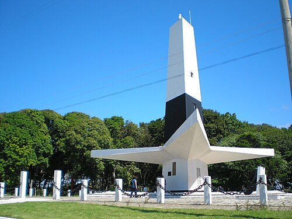

Farol do Cabo Branco

Com formato triangular inspirado no sisal, o farol tem mirante com vista para a Ponta do Seixas.

Refúgio Ponta do Seixas
Pousada no extremo oriental das Américas, em João Pessoa (PB)
| Destino | Distância | Tempo de carro |
|---|---|---|
| Farol do Cabo Branco | 1 km | 3 min |
| Praia de Tambaú | 7 km | 15 min |
| Centro Histórico | 10 km | 25 min |
| Aeroporto Castro Pinto | 25 km | 35 min |

Com formato triangular inspirado no sisal, o farol tem mirante com vista para a Ponta do Seixas.